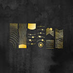
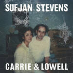
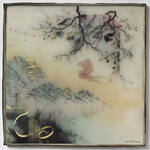

Flow opens on a mountain
Seven stops down one stream, crown at the summit, root at the foot.
09:12Flow
FlowDate: 11 / 11 / 26
How this is built
| Screen | ui/flow/Mountain.tsx takes the place of the list in ui/flow/Flow.tsx. |
| Stops | 3 a.m., Replay, Fight, Depress, Shame, Shutdown, Panic: each where the tradition puts its block. The order is settings.stops. |
| Colour | A ring in the chakra hue by the voice formula (rule 3); the water stays ink (rule 30). One new token, --h-indigo. |
| Water | A long shape, cycle/river.ts, drawn by parts/Stream: one loop, about 140 lines, only while on screen. |
| Here | This mock runs: drag the meter and any gate. |
| Plan | PLAN-MOUNTAIN.md, packages R0 and R1. |
I say how heavy today is
Drag Depression and the whole stream thins and slows.
09:12Flow
FlowDate: 11 / 11 / 26
How this is built
| Maths | The spring gives s = 1 - 0.8 d; it never reaches zero (model/mountain.ts). |
| Control | A mark on a rule, the lean slider's hand; the water answers under the finger and the reading is written on release. |
| Data | A row of readings: { at, of: 'mountain', value }. The history is kept and shown nowhere yet. |
| Plan | Package R2. |
I close a gate where it sticks
Shame at 70 percent: the water pools above it and runs thin below.
09:12Flow
FlowDate: 11 / 11 / 26
How this is built
| Maths | A gate lets through p = 1 - 0.85 b. Below stop i runs q = s × p(1) ... p(i). |
| Seen as | The share of motes showing, their pace, and the width of the line under them, so Reduce Motion still says it. |
| Gesture | A sideways drag on the short rule under the name; the page still scrolls. A tap on the ring or name opens the flow. |
| Stale | A reading older than a day is drawn dashed until touched. |
| Plan | Package R2. |
I see where the energy goes
Three part-closed gates and a heavy day leave a trickle for the lake.
21:40Flow
FlowDate: 11 / 11 / 26
How this is built
| Order | A gate high on the mountain starves every stop below it: energy lost upstream is not there downstream. |
| Floor | No gate and no meter reaches zero, so something always arrives. |
| Never | Nothing moves a gate but his finger; a ticked row does not open it. |
I tap a stop for its flow
The drawing, its gate, and what to do: nothing to read.
09:12Flow
PanicDate: 11 / 11 / 26
How this is built
| Kept | The nine drawings, their water, the dot, episodes, hold the ring, the clock, ghost rings, stamps, hand-offs. |
| Leaves the page | The flow's line, the said paragraph, "Usually", wise lines, last time, the notes. All stay in the data. |
| Safety | The 988 line, the doctor lines and the hand-offs stay as print lines. |
| Gate | The same reading as on the mountain; the drawing's own water runs at its step paces times the gate. |
| Plan | Package R3. |
At rest it lists what unblocks
What I ticked last time comes first, then something to put on.
09:12Flow
DepressDate: 11 / 11 / 26
If you're thinking about suicide, call or text 988. Someone answers, any hour.
How this is built
| List | Up to six rows: rows ticked in past episodes first (model/tips.ts whatHelped), the On row, then seed order. |
| A step | A tap on a step word shows that step's rows, as today. |
| Plan | Package R3. |
Shows, books, games and art
On opens three covers and my own lines, with room for a book and a piece of art.
09:12Flow
DepressDate: 11 / 11 / 26
Music you choose



How this is built
| Kinds | PickKind gains book and art, written lines like a show. |
| Titles | None are seeded: every pick is his. The two grey lines here are empty slots, not suggestions. |
| At rest | The On row gathers the picks of every step of the flow. |
| Plan | Package R4, on PLAN-PICKS.md's sheet. |
Energize and Meditate keep their places
The arc in the sky and the lake at the foot open their own pages.
09:12Flow
FlowDate: 11 / 11 / 26
How this is built
| Energize | Its own small drawing over the summit; the page with the three fixations is unchanged. |
| Meditate | The stream ends in the circle, and the lake travels into the page's circle (rule 28). |
| Rows | Right now, What if, any flow he made and + flow stay on the rules under the mountain. |
| Door | The ring without the PIN keeps its own list; the mountain stays behind the PIN. |
Still keeps the names
No meter, no gates, no colour: the water runs slow, in ink.
03:10Flow
FlowDate: 11 / 11 / 26
How this is built
| Rule 13 | Still shows no states, so every stretch runs the same at --stream .4. |
| Nothing lost | Leaving Still brings the meter and gates back as they were set. |